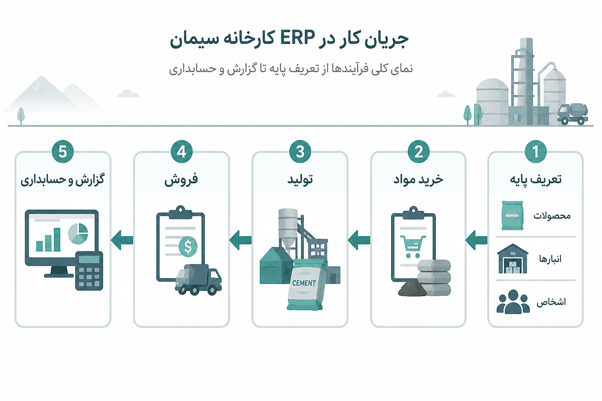
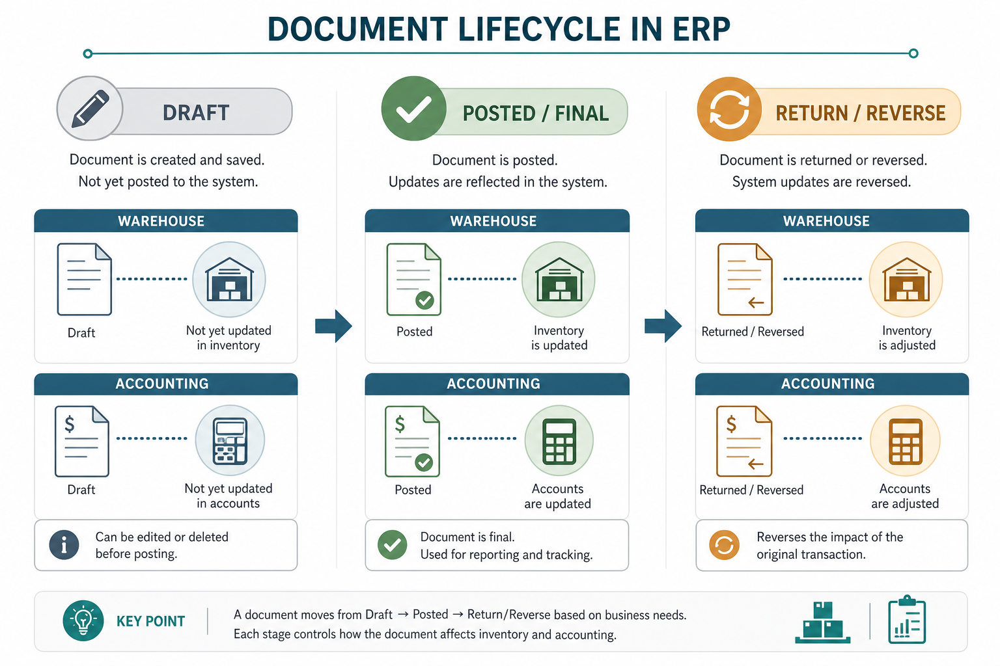
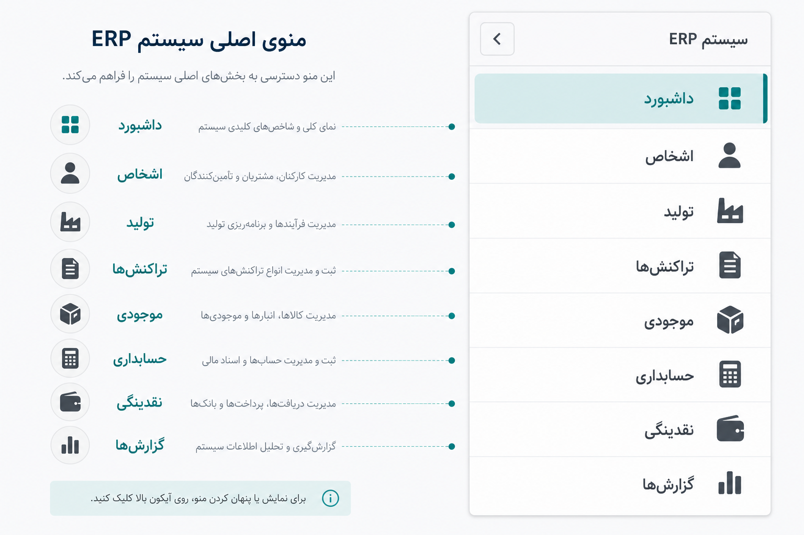

این راهنما برای کاربران عملیاتی سیستم نوشته شده است: ورود، ثبت اطلاعات پایه، خرید و فروش،
تولید، انبار، صندوق، حسابداری و گزارشگیری. هدف این است که بدون نیاز به دانش فنی،
بتوانید روزانه با سیستم کار کنید.
همگام سمنت یک پنل مدیریت یکپارچه برای کارخانه سیمان است. از طریق این سیستم میتوانید
افراد، محصولات، خرید، فروش، تولید، انبار، حمل، صندوق و حسابداری را در یکجا مدیریت کنید.

نمای کلی جریان کاری: اطلاعات پایه ← خرید ← تولید ← فروش ← گزارش و حسابداری
ایدهٔ اصلی سیستم
فرمهایی مثل فاکتور خرید/فروش، مصارف و عواید لایهٔ ورود اطلاعات هستند.
وقتی سند را ثبت نهایی میکنید، سیستم موجودی انبار و سند حسابداری (دفترروزنامه) را همزمان بهروز میکند.
حسابداری سیستم دابلانتری است؛ یعنی هر ثبت مالی باید بدهکار و بستانکارش مساوی باشد.

چرخهٔ رایج اسناد: پیشنویس ← ثبت نهایی ← در صورت نیاز برگشت/برگشت از خرید یا فروش
وضعیت
معنی برای کاربر
چه کار میتوانید بکنید؟
پیشنویس
هنوز قطعی نشده؛ روی موجودی/حساب اثر نگذاشته یا کامل نشده است.
ویرایش، حذف (در بیشتر موارد)، سپس ثبت نهایی
ثبتشده
قطعی شده و روی موجودی و/یا دفتر اثر گذاشته است.
مشاهده، چاپ، برگشت (در صورت مجاز بودن)
برگشت
سند معکوس برای اصلاح خرید/فروش ثبتشده.
ایجاد از روی فاکتور مبدأ؛ سپس مشاهده/چاپ
نکته مهم:
بعد از ثبت نهایی معمولاً ویرایش آزاد ندارید. اگر اشتباه کردید، از مسیر «برگشت» یا «برگشت سند» استفاده کنید؛ سند قبلی را دستی دستکاری نکنید.
۲. ورود و محیط کار
۲.۱ ورود به سیستم
صفحه ورود: نام کاربری و رمز عبور را وارد کنید
آدرس پنل را در مرورگر باز کنید.
نام کاربری و رمز عبور خود را وارد کنید.
روی دکمه ورود کلیک کنید.
در صورت موفقیت به داشبورد (یا صفحهای که قبلاً باز کرده بودید) میروید.
راهنمایی:
در صفحه ورود میتوانید تم روشن/تاریک را هم تغییر دهید. این تنظیم فقط ظاهر صفحه را عوض میکند.
۲.۲ خروج
از منوی کاربر در بالای صفحه (سمت چپ در حالت فارسی)، گزینه خروج را انتخاب کنید.
۲.۳ اجزای صفحه اصلی

منوی کناری (سایدبار) دسترسی به همهٔ بخشها را میدهد
بخش صفحه
کاربرد
منوی کناری
رفتن به ماژولها (داشبورد، افراد، تولید، معاملات، انبار، حسابداری، …)
هدر بالا
نام کاربر، نقش نمایشی، اعلانها، تغییر تم، خروج
محتوای صفحه
لیستها، فرمها، گزارشها
تنظیمات (پایین منو)
اطلاعات شرکت، لوگو، مالیات، سال مالی
۲.۴ الگوی مشترک کار با لیستها
در بالای بیشتر صفحات دکمهٔ جدید / افزودن وجود دارد.
جعبهٔ جستجو در همه ستونها… برای پیدا کردن سریع رکورد است.
روی هر ردیف دکمههای آیکونی مثل مشاهده، ویرایش، حذف، چاپ، ثبت نهایی دیده میشود.
اگر دکمهای را نمیبینید، معمولاً به این دلیل است که دسترسی آن عملیات برای کاربر شما فعال نیست.
۳. شروع سریع — ترتیب پیشنهادی راهاندازی
اگر سیستم تازه راهاندازی شده یا میخواهید از صفر شروع کنید، این ترتیب را رعایت کنید:
۱. تنظیمات شرکت
←
۲. ارز پایه
←
۳. واحد و محصول
←
۴. انبار
←
۵. افراد
←
۶. صندوق/بانک
تنظیمات: نام شرکت، لوگو، مالیات پیشفرض، سال مالی را بررسی کنید.
ارزها: ارز پایه (معمولاً افغانی) را تأیید کنید؛ در صورت نیاز ارزهای دیگر و نرخ را ثبت کنید.
محصولات: واحدها، دستهبندی، سپس لیست محصولات را بسازید.
انبارها: انبارهای مواد خام و محصول ساخته را تعریف کنید.
موجودی اول دوره: اگر از قبل کالا دارید، موجودی افتتاحیه را ثبت کنید.
افراد: مشتریان، تأمینکنندهها، رانندگان، کارمندان و … را وارد کنید.
صندوق و بانک: صندوقها و حسابهای بانکی را تعریف کنید.
فرمول تولید: اگر تولید دارید، فرمول ساخت را بسازید.
حالا میتوانید خرید، تولید، فروش و دریافت/پرداخت را روزانه انجام دهید.
توجه:
کدینگ حسابهای پیشفرض معمولاً از قبل در سیستم وجود دارد. مگر اینکه حسابدار بگوید، ساختار حسابها را بدون هماهنگی تغییر ندهید.
۴. اطلاعات پایه
۴.۱ ارزها
مسیر: ارزها ← لیست ارزها
ارز جدید را با کد و نام اضافه کنید.
نرخ تبدیل نسبت به ارز پایه را ثبت کنید.
در صورت نیاز یکی از ارزها را بهعنوان ارز پایه تعیین کنید.
نوسانات: از منوی «نوسانات» تاریخچه تغییر نرخها را ببینید.
۴.۲ محصولات
مسیر: محصولات ← لیست محصولات / دستهبندی / واحدها
واحدها
واحد پایه (مثل کیلوگرم) تعریف کنید.
واحدهای مشتق (مثل پاکت، تن) را با ضریب تبدیل نسبت به پایه بسازید.
مثال:
اگر ۱ پاکت = ۵۰ کیلوگرم باشد، واحد پاکت را مشتق از کیلوگرم با ضریب ۵۰ تعریف کنید تا تبدیل در فاکتور و انبار درست انجام شود.
دستهبندی
محصولات را در دستههایی مثل خام، پروسسشده و … گروهبندی کنید تا گزارشها خواناتر شوند.
لیست محصولات
روی افزودن کلیک کنید.
نام، دسته، واحد و سایر مشخصات را وارد کنید.
در صورت نیاز موجودی حداقل بگذارید تا کمبود انبار هشدار دهد.
ذخیره کنید.
۵. افراد
مشتریانخریداران کالا — پایه فاکتور فروش
تأمینکنندههافروشندگان مواد — پایه فاکتور خرید
پرسونلکارمندان، حضور و غیاب، بخشها
حقوق و مزایامحاسبه و پرداخت حقوق ماهانه
رانندگان / موتردارانبرای حمل و نقل
سهامدارانسرمایه و حقوق صاحبان سهام
۵.۱ مشتری و تأمینکننده
به صفحه مشتریان یا تأمینکنندهها بروید.
افزودن را بزنید و مشخصات (نام، نوع حقیقی/حقوقی، تماس، …) را وارد کنید.
در صورت داشتن مانده اول دوره، مانده افتتاحیه را طبق فرم ثبت کنید.
برای دیدن جزئیات و فاکتورهای مرتبط، روی آیکون مشاهده کلیک کنید.
حذف:
مشتری/تأمینکنندهای که تسویه نشده یا سند مرتبط دارد معمولاً قابل حذف نیست. ابتدا وضعیت مالی را بررسی کنید.
۵.۲ راننده و موتردار
قبل از ثبت سفرهای حمل، رانندگان و موترداران را در این بخش تعریف کنید تا در فرم سفر قابل انتخاب باشند.
۵.۳ سهامداران
سهامداران و مانده اولیه سرمایه را اینجا ثبت کنید. عملیات آورده/برداشت/توزیع سود در بخش حسابداری ← حقوق صاحبان سهام انجام میشود.
۶. خرید و فروش (معاملات)
۶.۱ فاکتور خرید
مسیر: معاملات ← خرید
دکمه افزودن فاکتور خرید را بزنید.
تأمینکننده، انبار مقصد، ارز و تاریخ را مشخص کنید.
ردیفهای کالا را اضافه کنید: محصول، مقدار، واحد، قیمت.
در صورت نیاز اطلاعات حمل (ناوگان خودی / کرایهای) را پر کنید.
یکی از این دو کار را انجام دهید:
ذخیره تغییرات بهصورت پیشنویس (قابل ویرایش)
ذخیره و ثبت فاکتور برای قطعیسازی (اثر روی موجودی و حسابداری)
۶.۲ فاکتور فروش
مسیر: معاملات ← فروش
روند مشابه خرید است؛ با این تفاوت که طرف حساب مشتری است و کالا از انبار خارج میشود.
نکته فروش:
پس از ثبت نهایی، سیستم بهای تمامشده و سود را بر اساس روش FIFO محاسبه میکند. برای فروش باید موجودی کافی در انبار باشد.
۶.۳ برگشت از خرید / برگشت از فروش
فاکتور ثبتشده را در لیست پیدا کنید.
روی عملیات برگشت از خرید یا برگشت از فروش کلیک کنید.
مقدار قابل برگشت را مشخص و تأیید کنید.
سند برگشت به فاکتور مبدأ لینک میشود و اثر معکوس روی موجودی/حساب دارد.
۶.۴ چاپ
روی فاکتورهای ثبتشده (و در بسیاری موارد قابل مشاهده) دکمه چاپ، گزارش چاپی را باز میکند.
اشتباه رایج:
فاکتور را چندبار «ثبت نهایی» نکنید و برای اصلاح عدد، فاکتور دوم موازی نسازید. مسیر درست معمولاً برگشت یا اصلاح طبق فرآیند مجاز سیستم است.
۷. تولید
فرمول ساخت
←
برنامه تولید (اختیاری)
←
تولید روزانه (پیشنویس)
←
بررسی هزینه
←
ثبت نهایی
۷.۱ فرمول ساخت
مسیر: تولید ← فرمول ساخت
محصول خروجی را انتخاب کنید.
مواد مصرفی (BOM) و مقدار هر ماده را وارد کنید.
هزینههای استاندارد (دستمزد، سربار، جانبی، ثابت) را در صورت نیاز اضافه کنید.
در صورت تمایل فرمول را بهعنوان پیشفرض علامت بزنید.
فرمول میتواند ثابت یا متغیر باشد؛ متغیر برای وقتی است که نسبت مواد با مقدار تولید تغییر میکند.
۷.۲ برنامه تولید
مسیر: تولید ← برنامه تولید
هدف تولید دورهای را ثبت کنید و در صورت پشتیبانی صفحه، از روی برنامه سند تولید روزانه بسازید.
۷.۳ تولید روزانه
مسیر: تولید ← تولید روزانه
سند تولید جدید بسازید (محصول، مقدار، انبار مواد، انبار محصول، فرمول).
بهصورت پیشنویس ذخیره کنید.
با پیشنمایش / بررسی هزینه صحت مصرف مواد و هزینهها را ببینید.
اگر درست بود، ثبت نهایی کنید تا موجودی مواد کم، موجودی محصول زیاد، و سند حسابداری ساخته شود.
در صورت نیاز میتوانید از مسیر مجاز سیستم، ثبت را برگشت (unpost) کنید.
قبل از ثبت نهایی تولید:
موجودی مواد اولیه در انبار مبدأ باید کافی باشد؛ وگرنه ثبت ممکن است خطا بدهد.
۸. انبار
۸.۱ تعریف انبار
مسیر: انبار ← انبارها
انبار را با نوع مناسب (مواد خام، نیمهخام، پردازششده) و ظرفیت تعریف کنید.
۸.۲ موجودی
مسیر: انبار ← موجودی
موجودی فعلی کالاها را ببینید. در صورت نیاز جزئیات لات / رهگیری تولید را هم بررسی کنید.
۸.۳ موجودی اول دوره
مسیر: انبار ← موجودی اول دوره
انبار و کالا و مقدار و بهای افتتاحیه را وارد کنید.
ثبت کنید تا موجودی و سند حسابداری افتتاحیه ساخته شود.
چه زمانی؟
معمولاً فقط در شروع کار با سیستم یا ابتدای دوره مالی، نه بهجای خرید روزانه.
۸.۴ گردش کالا
مسیر: انبار ← گردش کالا
دفتر ورود و خروج کالا را با فیلتر انبار، محصول و تاریخ ببینید. انتخاب انبار معمولاً لازم است.
۸.۵ انتقال بین انبار
سند انتقال بسازید: انبار مبدأ، مقصد، کالا، مقدار.
پیشنویس را ذخیره کنید.
با ثبت نهایی، موجودی جابهجا میشود.
۸.۶ انبارگردانی
شمارش فیزیکی را در سند پیشنویس وارد کنید.
پس از اطمینان، سند را تأیید کنید تا اختلاف موجودی اصلاح و سند حسابداری مرتبط ثبت شود.
۹. حمل و نقل
برای مدیریت ناوگان، سفرها و هزینههای حمل از این ماژول استفاده کنید.
ابتدا مسیر، وسیله و راننده را در صفحات پایه تعریف کرده باشید.
از «حمل و نقل» سفر جدید بسازید.
هدف سفر (باربری تجاری، ورود خرید، تحویل فروش) و وضعیت را مشخص کنید.
با پیشرفت کار وضعیت را بهروز کنید تا گزارش ترانسپورت دقیق باشد.
ارتباط با فاکتور:
در فاکتور خرید/فروش هم میتوانید بخش حمل را پر کنید (بدون حمل، ناوگان خودی، کرایهای).
۱۰. صندوق و بانک
۱۰.۱ تعریف صندوق
مسیر: صندوق ← تعریف صندوق
صندوقهای نقدی را بسازید. انتقال وجه بین صندوقها نیز از همین فضا قابل انجام است.
۱۰.۲ بانکها
حسابهای بانکی شرکت را تعریف کنید تا در دریافت/پرداخت و گزارشها قابل انتخاب باشند.
۱۰.۳ شیفت و تحویل
شیفت صندوق را باز کنید.
عملیات روز را انجام دهید.
در پایان، شیفت را ببندید و تحویل را ثبت کنید.
۱۰.۴ شارژ تنخواه
برای تأمین موجودی تنخواه از صندوق اصلی/منبع مشخص، از این صفحه استفاده کنید.
۱۱. حسابداری
بیشتر اسناد عملیاتی (خرید، فروش، تولید، حقوق، …) خودشان سند دفتر میسازند.
بخش حسابداری برای کنترل دفتر، دریافت/پرداخت، مصارف/عواید متفرقه و گزارشهای مالی است.
۱۱.۱ کدینگ حسابها
مسیر: حسابداری ← کدینگ حسابها
ساختار چهارسطحی را ببینید:
گروه
←
کل
←
معین
←
تفصیلی
از روی حساب میتوانید دفتر معین (گردش حساب) را باز کنید.
هشدار:
حسابهای سیستمی را حذف یا بیدلیل جابهجا نکنید؛ به ثبت خودکار اسناد وابستهاند.
۱۱.۲ اسناد دفترروزنامه
برای ثبت دستی سند حسابداری:
سند جدید بسازید و شرح/تاریخ را وارد کنید.
خطوط بدهکار و بستانکار را اضافه کنید (در صورت نیاز با مرکز هزینه).
مجموع بدهکار باید با مجموع بستانکار مساوی باشد.
در صورت نیاز پیوست فایل اضافه کنید.
برای ابطال اثر سند ثبتشده از عملیات برگشت سند استفاده کنید.
۱۱.۳ دریافت و پرداخت
مسیر: حسابداری ← دریافت و پرداخت
نوع طرف حساب را انتخاب کنید (مشتری / تأمینکننده).
طرف حساب و مبلغ را وارد کنید.
صندوق یا بانک مقصد/مبدأ را مشخص کنید.
در صورت نیاز به فاکتور مرتبط لینک دهید و ثبت کنید.
۱۱.۴ عواید و مصارف متفرقه
عواید: درآمدهایی که فاکتور فروش نیستند.
مصارف: هزینههایی که فاکتور خرید کالا نیستند.
دستهبندیها را از «حسابداری ← دستهبندیها» مدیریت کنید.
ردیفهایی که از فاکتور بهصورت سیستمی آمدهاند معمولاً قفلاند و نباید دستی ویرایش شوند.
۱۱.۵ سایر ابزارهای حسابداری
صفحه
کاربرد کوتاه
مراکز هزینه
تفکیک هزینه بر اساس مرکز/واحد
ذخیره مطالبات مشکوک
ثبت/ابطال ذخیره مطالبات
اسناد تکرارشونده
قالب سند ماهانه/دورهای و صدور در تاریخ انتخابی
خرید و فروش ارز
تبدیل ارز با ثبت دفتر
حقوق صاحبان سهام
آورده، برداشت، توزیع سود
داراییهای ثابت
ثبت دارایی، استهلاک، فروش/اسقاط
سال مالی
میانبر به تنظیمات ← بستن/بازگشایی سال مالی
۱۲. حقوق و پرسنل
۱۲.۱ بخشها و کارمندان
مسیر: افراد ← پرسونل
تب بخشها: ساختار سازمانی را بسازید.
تب کارمندان: پرسنل را با مشخصات و بخش مربوطه ثبت کنید.
تب حضور و غیاب: حضور روزانه، تأخیر و اضافهکاری را ثبت/ذخیره کنید.
۱۲.۲ حقوق و مزایا
مسیر: افراد ← حقوق و مزایا
سال و ماه شمسی را انتخاب کنید.
پیشنویس محاسبه را بر اساس حضور بارگذاری کنید.
کسورات و اضافهها را در صورت نیاز اصلاح کنید.
پرداخت را ثبت کنید (سند حسابداری مرتبط ساخته میشود).
۱۳. گزارشات و آمار
۱۳.۱ آمار و تحلیل
مسیر: آمار و تحلیل
نمای مدیریتی شامل تراز آزمایشی، سررسید مطالبات/بدهیها، سود و زیان، ترازنامه، جریان وجوه نقد و موجودی صندوقها.
۱۳.۲ گزارشات عملیاتی
گزارش
چه چیزی میدهد؟
محصولات
گزارش جامع محصولات (معمولاً در پنجره/چاپگر گزارش)
تولیدات
گزارش تولید و امکان ردیابی
ترانسپورت
خلاصه تن، کرایه، تعمیرات و …
عواید / مصارف
گزارش با فیلتر تاریخ
روزنامچه
گزارش ترکیبی خرید، فروش، عواید، مصارف، تولید، عمومی
۱۳.۳ داشبورد
داشبورد خلاصه امروز/ماه تولید، خرید، فروش، وضعیت مخازن/انبار، نمودار عملکرد، اعلانها و آخرین عملیات را نشان میدهد.
هر روز کار را از اینجا شروع کنید تا وضعیت کلی را ببینید.
۱۴. کاربران و دسترسیها
۱۴.۱ مدیریت کاربران
مسیر: کاربران ← کاربران
کاربر جدید بسازید، ویرایش کنید، رمز را عوض کنید یا حذف کنید.
فیلد «نقش» بیشتر برای نمایش است (مثلاً مدیر سیستم)، نه محدودیت واقعی.
۱۴.۲ سطح دسترسی
مسیر: کاربران ← سطح دسترسی
کاربر را انتخاب کنید.
درخت دسترسی هر صفحه را ببینید.
برای هر صفحه عملیات لازم را فعال کنید: مشاهده، ایجاد، ویرایش، حذف (و در بعضی صفحات عملیات اضافه مثل تغییر رمز یا ثبت نرخ ارز).
ذخیره کنید.
چرا منو را نمیبینم؟
اگر دسترسی مشاهده یک صفحه را نداشته باشید، آن آیتم از منوی کناری مخفی میشود.
بستن سال مالی:
معمولاً فقط مدیر سیستم (با تأیید امنیتی) مجاز است. این کار را بدون هماهنگی حسابدار انجام ندهید.
۱۵. تنظیمات
مسیر: تنظیمات (پایین منوی کناری)
اطلاعات شرکت و لوگو
مالیات/تنظیمات پیشفرض
سال مالی و دورههای مالی (بستن / بازگشایی)
احتیاط:
بستن سال مالی اسناد اختتامیه میسازد و جلوی ثبت در دوره بستهشده را میگیرد. قبل از بستن، گزارشها و موجودی را قطعی کنید.
۱۶. سوالات پرتکرار و نکات مهم
چرا فاکتور فروش ثبت نمیشود؟
موجودی انبار کافی نیست.
محصول/واحد/مشتری ناقص است.
سال یا دوره مالی بسته است.
دسترسی ثبت برای کاربر شما فعال نیست.
تفاوت پیشنویس و ثبت نهایی چیست؟
پیشنویس برای آمادهسازی و بررسی است. ثبت نهایی سند را قطعی میکند و معمولاً موجودی و حسابداری را بهروز میکند.
بعد از ثبت نهایی، ویرایش آزاد محدود یا غیرفعال است.
اگر مبلغ فاکتور ثبتشده اشتباه بود چه کنم؟
از برگشت از خرید/فروش (یا برگشت سند حسابداری در موارد مجاز) استفاده کنید؛ سند موازی اشتباهساز نسازید.
مصارف حمل را کجا بزنم؟
هزینه مرتبط با سفر/ناوگان: حمل و نقل ← فاکتور مصارف
هزینه متفرقه عمومی: حسابداری ← مصارف
هزینه روی خود فاکتور خرید/فروش: بخش حمل داخل فاکتور
چکلیست روزانه پیشنهادی
داشبورد را باز کنید و اعلانها/کمبود موجودی را ببینید.
شیفت صندوق را در صورت نیاز باز کنید.
خریدهای روز را ثبت و در صورت قطعی بودن، ثبت نهایی کنید.
تولید روزانه را ثبت و پس از بررسی هزینه، نهایی کنید.
فروشها را ثبت نهایی کنید.
دریافت از مشتری / پرداخت به تأمینکننده را بزنید.
سفرهای حمل را بهروز کنید.
در پایان روز شیفت صندوق را ببندید.
واژهنامه کوتاه
واژه در سیستم
معنی ساده
عواید
درآمدها
مصارف
هزینهها
روزنامچه
گزارش روزنامه / دفتر روز
تنخواه
وجه در اختیار برای هزینههای خرد
موتردار
مالک وسیله نقلیه
ثبت نهایی / Post
قطعیسازی سند و اعمال اثر مالی/انبار
کدینگ
درخت حسابهای دفتر کل
چاپ این راهنما:
دکمه «چاپ / ذخیره PDF» بالای صفحه را بزنید و در پنجره چاپ، مقصد را PDF انتخاب کنید.